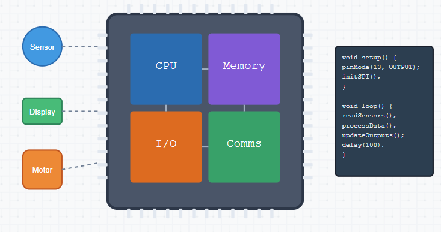
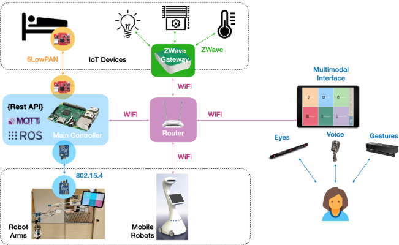
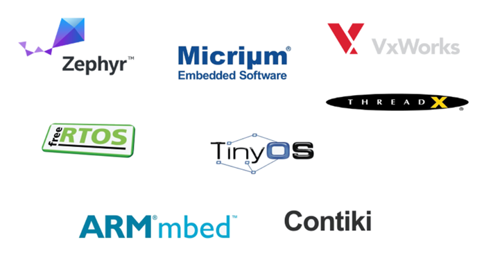
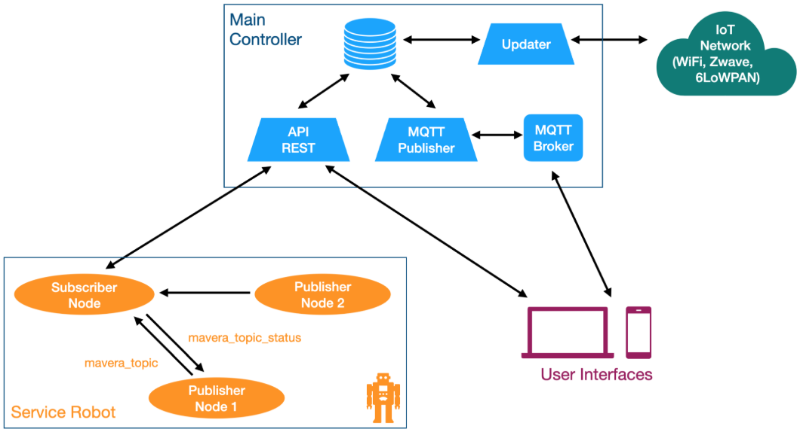

Firmware Development
We develop reliable, high-performance firmware for embedded systems across various industries. Our firmware engineers specialize in creating custom solutions, integrating hardware with software, and optimizing for real-time performance. Whether it's IoT devices, automotive systems, or medical devices.

Firmware Development Excellence
At FessiT, our firmware development team creates robust, efficient, and reliable embedded software solutions that power hardware devices across multiple industries. We combine deep technical expertise with innovative approaches to deliver firmware that meets rigorous performance and reliability standards.
Technology Stack
- Programming Languages: C, C++, Embedded C, Assembly
- Microcontroller Platforms: ARM Cortex-M series, AVR, PIC, ESP32, STM32
- RTOS: FreeRTOS, Zephyr, ThreadX, RTX
- Communication Protocols: I2C, SPI, UART, CAN, Bluetooth, Wi-Fi, LoRaWAN, Zigbee
- Development Tools: IAR Embedded Workbench, Keil MDK, STM32 Cube, PlatformIO, SEGGER J-Link
Application Domains
- Smart IoT Devices
- Industrial Control Systems
- Medical Devices
- Automotive Systems
- Wearable Technology
- Battery-Powered Devices
Engineering-Driven Firmware Development
- Resource Optimization: Memory-efficient code, power management, and performance tuning
- Hardware Abstraction: Layered architecture for platform independence and code reusability
- Real-time Processing: Deterministic behavior with precise timing guarantees
- Reliability Engineering: Fault tolerance, watchdog implementation, and error recovery
- Secure Firmware Design: Encryption, secure boot, and over-the-air update mechanisms
Development Methodology
- Hardware-in-the-loop testing
- Continuous Integration for embedded systems
- Automated verification and validation
- Comprehensive debugging and profiling
- Compliance with industry standards (IEC, ISO, UL)
Hardware Integration
We design and implement seamless hardware‑software interfacing for embedded and IoT systems. Our engineers develop custom device drivers, hardware abstraction layers (HAL), and board bring‑up support to ensure reliable communication with sensors, actuators, and peripherals. From prototype validation to production‑grade testing.

Hardware Integration Excellence
At FessiT, we design and implement seamless hardware-software interfacing for embedded and IoT systems. Our engineers develop custom device drivers, hardware abstraction layers (HAL), and board bring-up support to ensure reliable communication with sensors, actuators, and peripherals. From prototype validation to production-grade testing, we deliver integrated solutions that bridge the physical and digital domains.
Technical Capabilities
- Device Driver Development: Custom firmware for specialized hardware components
- Hardware Abstraction: Platform-independent interfaces for sensors and peripherals
- Board Support Packages: Complete initialization and configuration frameworks
- Low-level Programming: Direct hardware access and register manipulation
- Integration Testing: Comprehensive validation of hardware-software interaction
Integration Services
- Embedded peripheral integration (CAN, I2C, SPI, UART devices)
- Sensor fusion and calibration
- Power management optimization
- Real-time signal processing
- Communication protocol implementation
- Hardware debugging and troubleshooting
- Performance optimization and bottleneck elimination
Industry Applications
- Industrial monitoring and control
- Medical devices
- Automotive systems
- Wearable technology
- Smart home and building automation
- Consumer electronics
- Environmental monitoring
- Agricultural technology
Our hardware integration expertise ensures your devices function reliably in diverse operating environments while meeting performance, power, and cost requirements.
RTOS & Bare-Metal Systems
We deliver deterministic, low-latency firmware solutions using real-time operating systems (FreeRTOS, Zephyr) and bare-metal architectures. From kernel configuration to low-level bootloader development, we ensure your embedded applications run reliably under the most demanding conditions.

Solutions for RTOS & Bare-Metal Systems
At FessiT, we deliver deterministic, low-latency firmware solutions using real-time operating systems (FreeRTOS, Zephyr) and bare-metal architectures. From kernel configuration to low-level bootloader development, we ensure your embedded applications run reliably under the most demanding conditions.
Technical Expertise
- RTOS Implementation: Task scheduling, inter-process communication, resource management
- Bare-Metal Programming: Direct hardware control, interrupt handling, memory optimization
- Bootloader Development: Secure boot processes, firmware update mechanisms
- Real-Time Performance: Predictable timing, deterministic behavior, deadline compliance
- Memory Management: Efficient allocation, fragmentation prevention, cache optimization
Development Services
- RTOS kernel configuration and customization
- Task prioritization and scheduling design
- Interrupt service routine implementation
- Critical section management
- Watchdog timer configuration
- Resource conflict resolution
- Power mode transitions
- Real-time debugging and profiling
Application Domains
- Mission-critical control systems
- Time-sensitive industrial equipment
- Medical monitoring devices
- Automotive control units
- Aerospace and defense applications
- High-reliability consumer electronics
- Audio/video processing systems
- Real-time monitoring networks
Our expertise in both RTOS-based and bare-metal approaches allows us to select the optimal architecture for your specific performance, power, and reliability requirements, ensuring robust operation even in the most challenging environments.
Protocol & Stack Development
We build robust communication stacks and implement industry-standard and custom protocols for embedded systems. Our expertise spans TCP/IP, CAN, Modbus, Bluetooth Low Energy, Zigbee, LoRaWAN, and proprietary protocols, ensuring efficient, secure, and interoperable data exchange.

Experience in Protocol & Stack Development
At FessiT, we build robust communication stacks and implement industry-standard and custom protocols for embedded systems. Our expertise spans TCP/IP, CAN, Modbus, Bluetooth Low Energy, Zigbee, LoRaWAN, and proprietary protocols, ensuring efficient, secure, and interoperable data exchange.
Technical Capabilities
- Wireless Protocol Implementation: BLE, Zigbee, LoRaWAN, Wi-Fi, RF
- Industrial Protocols: Modbus, CAN, Profibus, EtherCAT, OPC UA
- Internet Protocols: TCP/IP, UDP, MQTT, CoAP, HTTP/HTTPS, WebSocket
- Custom Protocol Design: Optimized for specific application requirements
- Protocol Translation: Gateway development for cross-protocol communication
Implementation Services
- Protocol stack porting and optimization
- Efficient packet handling and buffering
- Reliable data transmission in challenging environments
- Security implementation (encryption, authentication)
- Low-power communication strategies
- Error detection and recovery mechanisms
- Interoperability testing and certification
- Protocol analyzer development for debugging
Application Domains
- Industrial automation networks
- Smart building infrastructure
- Automotive communication systems
- Healthcare device connectivity
- IoT sensor networks
- Energy management systems
- Agricultural monitoring solutions
- Supply chain tracking applications
Our protocol development expertise ensures your devices communicate reliably and securely across diverse environments, from bandwidth-constrained IoT networks to high-speed industrial systems, while optimizing for your specific power, range, and throughput requirements.